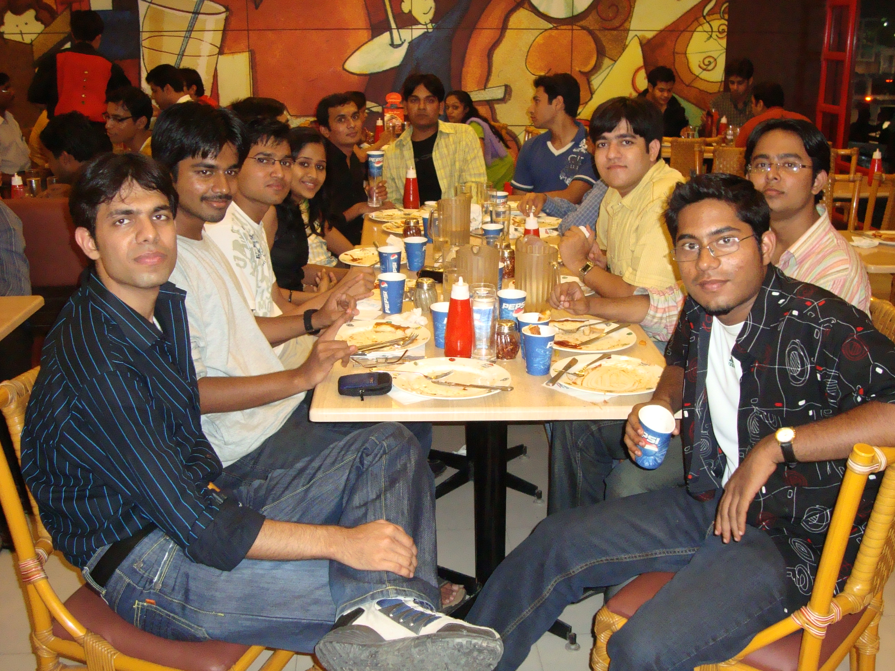

The Yearbook - Commemorating 2005-09!
Shikha Aggarwal's profile information
Name - Shikha AggarwalBirthday - 20 August
Email - helloshikha@gmail.com
Address - House no. 601, New Kamla Nehru Colony, Bathinda - 151001, Punjab
Phone - 0164-2222766(Home), +91-98666-81227
Hobbies - Reading, sleeping
WishList - Travel around the world
What would you want to be remembered as - :)
Testimonials written by Shikha Aggarwal
Shikha Aggarwal's Album

Default caption

{kind=link}
Default caption

Default caption
Testimonials
Abhishek Sainani wrote-Again forgot... she hails from Bathinda and when I told her I lived there as a kid for 1 year, she seemed to be happy, which I had expected but curiously asked the reason for which she said that she doesn't meet many people from Bathinda... she said we were city buddies!

Abhishek Sainani wrote-
Oh I forgot about the Google and IIMs... so what's your pick? Really a phodu student !!
Abhishek Sainani wrote-
The only thing I remember about her for first 3 years of my college is her voice, which has been, time and again, resonated by others in a much more shrilly tone.
Yeah, she likes to talk, reminds me of Kareena Kapoor of Jab We Met.
She's quite a nice girl, we've had some pleasant conversation.
All the best for future, I'm sure it'd be much better, although not the same as these college days!
Sanket Sharma wrote-
Thanks shikha for the 'unexpected' 'wonderful' 'emotional' 'funny' testimonial... It's good to hear that you missed your lunch for this, but i have missed plenty of lunch and dinners working out things that you have mentioned. But the appreciation from all sides make me forget all those pains for a while.
Shikha is one among the two north indian girls who joined IIIT in our batch. Before I joined the college I had already figured out Shikha punjabi in the list of would be IIITians'05.
First year ki baat hai, in CO Lab Test I was sitting next to her and asked her to help me out. She said okay but when test started she had turned her monitor otherside and refused to show. I somehow made two codes, one gives an out as 1 and other gives an output 0, I made TA fool and got full number in the lab test. And she was still struggling with the code. I told her softly 'lage raho mai chalta hun' sarcastically. But now i realise after four years that she is helpful just that she didn't want to screw in grades.
She is childish, fun loving, and charming girl. She is a bundle of dedication and determination which is quite visible from her performance in placements and CAT score.
Iske saath aap kabhi bore nahin ho sakte, ghanto tak baith ke BC kar sakte ho. She has endless things to say. she has a very cute smile which makes me hang for a while and say 'hi' to her even when I am in hurry.
Have a good time ahead. Its good that you are in hyd. Will have second part of the story in corporate life.
Karan wrote-
One more of the girls (I am bad at this!) with who I had issues, but it was very nice of her to come and sort out.
Shes your quintessential fodu girl.. Google + IIM calls, amazing work! Just that I felt you should have gone for the interviews.. Just for the heck of it!
Wish you all the very best in life! Peace.
Prashasti Gupta wrote-
She is hard working, focused and totally dedicated to her work ..

We have spent 1 semester literally living in each others room, yup , we ate together, went to classes together, outing together,...
We had this group of four ppl..and we had enumerable walks,talks,outings...and it was all fun....
 ..cheers to that group
..cheers to that group
Her hard work has earned her MS intern,Google job and IIM calls..
...
All I can say is that -'Know what you want from your life and always be happy..
'
Wishing you loads of luck

Maruti Borker wrote-
Are I totally forgot about the BC sessions we had in Yukthaar mess ... Those were some helluva memories ;;(
THE END
Maruti Borker wrote-
Shikha har time hasti rehti hai ( just like me
 ).
).
Though I dont know much about her personally, We manage to have nice chats/ leg-pulling sessions in classes etc etc.
... She is just like a small cracker.. dikhne mein chota but jab patha hai kaan goonj jaaye . Kaan Goonjne se yaad aaya, She is a big chatter box ... bahut bolti hai . One of the most intelligent students in our batch, got the G job  and 5 IIM calls .. .
and 5 IIM calls .. .
Her dedication towards academics is totally awesome
 . Advance Cog Sci ke class mein ye ek hi student hogi jo teek se class sunti ho
. Advance Cog Sci ke class mein ye ek hi student hogi jo teek se class sunti ho  .
.
Will miss you for your funny comments here and there
. All the best for ur future and keep in touch ... and ya keep commenting on my gtalk status/pics etc.
PS: New NickName: Bongla kudi from punjab
Nitin Jain wrote-
Shikha ante amma
Poore time chapar chapar
. Bakwas karne mei toh Fm radio ko bhi maat dede.
Bahut intelligent hai. she had cracked CAT and google
but abhi bhi sure nahi ki kya karna hai. Shayad IAS ka exam and GRE bhi dena hai . she has got excellent skills in english and mathematics lekin hindi utni hi kharab hai.
Bahut padai karti hai
.
Hamesha trip ke lie bolti hai lekin kabhi jaati nahi hai
.Khurana ke saath jhagadne mei inhe extra maja aata hai  . Poore time bechare bengali ko dhamkati rehti hai ki girl mailing list par ****************** ......... (it's top secret) mail bhej dungi . Tujhe kachori khilane ki bajah se kitni maar khai hai maine shashank se
. Poore time bechare bengali ko dhamkati rehti hai ki girl mailing list par ****************** ......... (it's top secret) mail bhej dungi . Tujhe kachori khilane ki bajah se kitni maar khai hai maine shashank se  . Isilie mein tujhe ghar se ayi hui mithai nahi khilata . Pareshan karna ho to bas keh do "shikha tu moti lag rahi hai" ya phir shashank ki side lelo . Bechare shashank par bahut atyachaar karti hai . Thodi kanjoos bhi hain. Saari purane incidence (acche aur bure) yaad rakhti hai. Kabhi-2 Naaraj bhi ho jaati hai aur except shashank noone knows ki kisse naaraj hai and kyun hai, to manao to kaise .
. Isilie mein tujhe ghar se ayi hui mithai nahi khilata . Pareshan karna ho to bas keh do "shikha tu moti lag rahi hai" ya phir shashank ki side lelo . Bechare shashank par bahut atyachaar karti hai . Thodi kanjoos bhi hain. Saari purane incidence (acche aur bure) yaad rakhti hai. Kabhi-2 Naaraj bhi ho jaati hai aur except shashank noone knows ki kisse naaraj hai and kyun hai, to manao to kaise .
Lekin Kaafi helping hai. Tips deti rehti hai ki girls se kaise baat karna hai etc.. Tere naam par jo microsoft trip thi woh awesome thi. Hamari placement tutorial bhi li thi isne. Thnx for all the help and best of luck for your future.
Isi tarah jeevan bhar is mitrta ki gehre bandhan ko nibhana
(YAdi samajh na aaye to pooch lena ). Srirang Ranjalkar wrote-
Shikha. My AI partner.
I still remember, I used to do all the work and she'd enjoy to the core. I did all the assignments and most of the project work. She just came in and gave a few test cases on the very right time.

I used to put all "bandar" type pics in GTalk and she'd comment on my pics every time.
.  .
.
I got a job in Google and foded off CAT too with so many calls.
. I mean its like a dream come true for every CS engineer. 
Hope you get what I'm writing!!
Keep rocking girl and all the very best for your future. I'm sure you're gonna go places with the talent that is stuffed inside you.
DJ Ranga
Manish Sharma wrote-
SHIKHA - One of the most intelligent student in our batch.
Job in Google and getting through CAT (written) proves that.
Since I am a bit shy, we do not used to talk much in first three years of our college life.
But in fourth year because of our common friends (mostly ece guys) we came closer and become a good friend.
And I became aware of a few more qualities of her after becoming her friend. She loves fighting
 .... not the physical one .. but the verbal one .. And if she and Khurana are sitting together anywhere on this earth .. you can witness it yourself.
.... not the physical one .. but the verbal one .. And if she and Khurana are sitting together anywhere on this earth .. you can witness it yourself.
She is a frank personality and speak out whatever she feels about you with ease.
But since she is a girl, she can't digest secrets ..
I truly hate girls for that
In spite of all this, we have become good friends and we used to ping each other(almost daily) on gtalk in a last few days of our college life.
Wish you a great success ahead!!
CHEERS!!
Aniket Sharma wrote-
Shikha, my classmate both in Bansal's, Kota and in IIIT. At that time I knew her as the girl with the peculiar high-pitched voice. Times have come and gone, aawaaz vahi rahi, but the girl preparing for IIT-JEE and coming to classes in IL School, Kota is going to be one of the select few people who get to join google.
Although I've known her for seven years, the major part of our interaction happened in the 4th year, in Bipin Sir's courses and in Yuktahaar mess. It's fun pulling her and Shashank's legs over any arbit small issue, and the two of them look so good together. In classes she comes across as this hard-working, no-nonsense girl, whose hard work shows in the presentations she gives.
One incidence about her that I would recall any time I think about her. After it was clear that she'll get a very good score in CAT, I congratulated her and said to her that she would be feeling very happy. To that she replied that she wasn't very happy, since the success in CAT had come without hard work. It took me some time to appreciate the statement. It really speaks volumes about you, Shikha. Keep the same spirit always and I'm sure you'll do great in life.
Memories: Appearing together for Yahoo and BoA interviews.
10 years down the line I see you as: A high-flying techie at an astronomical level in the IT industry, Shashank's better half.
Tags: Bansal, girls, Google, Yuktahaar.
Subhashis Chand wrote-
Again a testimonail from BigB
She is cute , bubbly, chirpy. She has a squeaking voice. I fondly call her Chuchu, has an intersting etymology. I had a great time with her in the first year. The whole "Chand Chand Chand..." thing was damn hilarious.
She is damn intelligent. Phodu in acads! Waah.. ma'am bhi gazab hai ... bina jyada pade CAT phod diya and interview ke liye nain gayi
.
She perhaps has the best resume in the batch, among the batch toppers, TA for all the major courses list is endless. And finally she is in Google.
I remember how unsatisfied she was after her first sem performance and she showed her determination in the following sems.
I had some really memorable experiences with her, "when I accidently pushed you off the swing
in Shilparamam, when you were cheering me up in the Bus because I was angry with you, making fun of your pony tail, disturbing you in the class,the Rakhi time and the long walks we had,the fun we had in Felicity'07, the Rangoli we made together in the recent felicity and won a consolation prize". Chuchu has set goals and she is very dedicated. She likes to try things and explore new domains, she is a good dancer, very creative. We were in the same english group and I was amazed how she used to poetically write
things.
She was brilliant in the Felicity, she managed threads pretty well and how can I forget rally against Global Warming, fab work. I will remember all the scolding sessions, I have scolded her over little things and then we used to make up for it
I remember our recent chat during placement, it was truly amazing! We were discussing "what will we do if we are not placed".
We have seldom talked after second year, but we have a special bond.
You will always be special to me!
All the best aage ke liye...
Cheers!!
Himank Sharma wrote-
Shikha aka Chuchu
Shikha, my cute little sister in IIIT (though age mein badi hai but dekhne mein to chhoti hi lagti hai na
). I never liked her much in our first sem or so, I can discreetly remember I-Day in our first year when I thought that she was quite haughty, as she and Prashasti were shushing us first years coz somebody had asked them to do so. Later on as time flew by and we get to know each other more, I realised that she wasnt so haughty after all.
The stories of her bondness could go on to fill volumes and yet they wouldnt be exhausted 9 Pointer, Intern in MS, Job in Google, 5 IIM calls, and pata nahin kis kis subect mein TA. Phew..
Main kahan, "Is even sky the limit??" . When it comes to studies, she and I are poles apart, she is the sincere student, always cribbing about assignments. She even enjoys studying I mean how can you do that?? Even in 8th sem after being placed in Google, she is sincere abuot her assignments
We almost invariably bonded over the 27 hour long bi-annual train journeys to Delhi we have undertaken all through our B.Tech, the train trips used to be so much fun, me & Pk teasing her, all 3 of us fighting for the window seat. Wish we could do it once more
Our relation has always been full of crests and troughs since the time she tied a rakhi on my hand for the first time. We would have VERY long BC sessions at times which would span for hours on end and then again, there would be months on end when we wouldnt talk at all, or even see each other once. Its been a very different story altogether. There have been some reasons which have ensured that things remained this way and will remain the same, so both of us have learnt to take it in our stride. And whwnever we meet, its always so much fun teasing her, giving a pat on her head ;D I sooo luv doing it!! Mast maza ata hai.. chidhane mein aise
Himank Sharma wrote-
[Part 2]
One incident which I will always remember is the first time she came to know that I smoked. It was sometime in 4th sem or so, I guess. She was shocked beyond belief at the prospect of me. I still remember she made me promise that I wont smoke again, but I being the intelligent fellow crossed my fingers and the result is known to everybody
But now she has grown used to the fact that I wont leave it, to zyada chein-pein nahin karti and chup chap se rehti even if I do it in front of her
Its been real pleasure knowing you, waise to I know you will decide your future yourself, but anyways All the Best!!
Most Memorable Moment : would be all the train trips we had, they were just plain Awesome
An advice : Dont dare forget the promise you made that day in front of DLF of finding a girl for me in Google
Cheers!! Keep Rocking..
Atul Dwivedi wrote-
Shikha ... A Bansalite and a intelligent but Nauty kind of mind ...very nice to talk and kind of childish sometime ..
.... She is very hard working and down to earth kind of girl..
Ab kya hi bolein ... Bandi bindaas hai ye
Padhai likhai mein fodu hai hi .. 5 IIMs se call the...!! Google mein job hai .. .aur kya hi kahna ..
Very talktive and friendly in nature ... baaki to pata hi hai logo ko kya hi bolein ..
Ab hai ye ki .. mujhe lagta hai ye thoda confuse si rahti hai ki kya karna hai kya nahi .... koi nahi acche se soch .. samajh mein aa jayega
She is cool girl .. jyada baato ko mind nahi karti .. that's the gr8 spirit ..
I saw upset her once in IIIT-H when She couldn't clear Capital IQ interview .. jabki bandi ne sabhi ke jabab de diye the .. are tujhe nahi pata .. tu over qualified thi ..
She is fun girl.. joke marti rahti hai ..and smile karati rahti hai .. mast hai ...
Ab baaki likhne ke liye mere paas kuch hai nahi kyun ki .. mai likhne mein accha nahi lekin ..
Once incident .. jab tu .. first mein 100m race participate ki thi .. mujhe bahut haseen aayi thi kyun ki ...kya bhaagee thi tu ..
...but at least u tried that's the best thing ..
hamare CAT ka center ek hi thi ...We both were chilled about it .. baaki Maroo and Shankar Dada saale discuss kar rahe the paper wahi par hi ...
Baaki kya bolein ...... Google mein hai to fodegi hi ..
Mujhe pata hai tu life mein accha karegi .
...
Enjoy
Lydia Manikonda wrote-
helloshikha
Whenever I see her I say that only
She is a sweet and smart gal.
We stayed in the same floor till now and had a gr8 time with her. In first yr we stayed little close but after that working in different fields n areas, n opting for diff courses, made us busy with our work but even then we had a gr8 time together during our wingie parties n stuff
Very helpful gal and doesn't interfere in others matters and always try to help others.
Awesome thing that she got into google for her hardwork and dedication
All da best dear n stay in touch
Sunil Soni wrote-
shikha -
s - sweet
h - happy
i - intelligent
k - koooool
h - hearty
a - active (hyper)
She is a mixture of everything ...
A real, true caring friend
she is really very talkative ... har dam bolti rehti bolti rehti bolti rehti hain ... rukne ka to koi naam hi nahi leti
aur lagega jaise koi billi 'meow meow' kar rahi hain
it was great fun teasing her every time ... especially when the topic comes on 'bhatinda' ... she goes mad with it literally ... it was mostly 'bhatinda' vs 'azamgarh' vs 'hyderabad' ....
she has a child-like smile n is very innocent ...
no one can get bored in her company ... apni pakar pakar se entertain karti rahegi
kuch bhi kaam bolo to bolegi - 'soni - itna aalsi mat bann' .... huh !!!
she is really very intelligent n her commitment is awesome .... agar kuch decide kar liya to sincerely karegi jab tak goal doesn't change ...
sometimes during CAT coaching, she was the only 1 in d class .. never missed a single class ... aur IIIT mein bhi classes on time .... or before time.. uff ..!! kaise yaar kaise ??
really hard working gal ....
the most wonderful n surprising thing was - even though she didn't prepare much for CAT, she managed to get 5 IIM calls ... wow !!! Hats off to u .... u rock buddy ...
it was real fun during outings ....
u really rock buddy n do keep rocking it always
aur haan ... itna hukum mat chalati ja logo pe ... darr lagta hain
Shashank Agrawal wrote-
part 2
Ghoomne ka, shopping karne ka bahut shauk hai. Mujhe bhi expert bana diya hai. Bahut kuch sikha hai maine - jo ladki ko shopping kara de, uske toh pair padne chahiye
Dresses ka collectio kafi acha hai. Up-to-date rehne mein vishwas rakhti hain. Kise aur ka naya dress dikha nahi ki inhe bhi naya dress chahiye
This might seem surprising, but hamare tastes bahut different hain. I hardly care what I am wearing but she does. I really care what I am eating but she doesn't. Main bahar khane ki liye jaata hoon woh ghoomne ke liye. Main bahut slow kaam karta hoon, woh bahut fast. I am lazy - never on time in classes, she is right on time always. Our approch towards solving a problem is also entirely different
Meri saari tension wahi lete hai. She helps me with everything. We have taken several crazy career-related decisions together in the past (more craziness was on my part) and went back on them. We were never sure what to do, but anyway tried several things with enthusiasm. Had she not been there, it would have been a very heavy, monotonous life in B.Tech. Without her help I wouldn't have arrived at the final decision. She has supported me all the way, good times, bad times.
Best wishes... and always 'be' there...
Shashank Agrawal wrote-
Shikha mere se kafi dino se naraaz ho rakhi hai. Poochti hai abhi tak testimonial kyun nahi likha. Naraazgi toh jayez hai. Soch raha hoon kafi time se kya likhon: only so much can words say
However, lets make a start.
part 1
Let me start by saying: shikha apni shikha se sabko khush kar dete hai. She has loads of energy, talks with infinite enthusiasm. There is no dull moment when she is around. She is a fun-loving girl. Meri saari baatein, saari problems, sab sunte hai.
Needless to say, she is brilliant. It often happens that she asks me to explain something or solve a problem for her. While I think of the possible solution/explanation, she would come up with her own in a matter of minutes, surprising me. She is the one who attends every lecture on time and prepares notes. There have been some hard subjects/topics...par ham library mein ghanto bhaite rehte, kaise bhi dheere-dheere kar lete.
Pakar-pakar bahut karte hai. Bandi ko iske liye award diya jaa sakta hai. Par ek baat jaroor kahoonga, agar chup ho jati hai tu man nahi lagta
(Padh ke shayad aur pakar na karne lage). Tension bhi kabhi-kabar le leti hai. Exam mein, interview mein thoda tense ho jati thi par ab theek hai.
Bahut jaldi kise se dosti ho jati hai - saari baatein sunti hai aur saari bata bhi dete hai. Kai ladke interested hain
Na zaane kahan kahan se kab kab pyaar bhare sms bhejte rehtein hain
IIIT mein kafi achievements kamayein hain. Google, Microsoft, IIM interview calls, parliament member, pata nahi kya kya. Par shikha wahi hai jo 1st year mein aaye thi - who used to sit beside me.
Deepak Vig wrote-
Shikha .. the only punjabi girl I have seen in my college. But I don't know if she knows Punjabi or not
never seen her talking in punjabi .
She is one of the few girls in the campus to whom I have talked and I really enjoy talking to her. She is very frank and talking to her is gr8 fun. I always use to tease her about one thing or the other and frustrate her. But she starts crying at the end
.
She is really good at studies ... placed in Google and got 5 IIM calls .. so I think its enough
and that explains everything about her intelligence.
In first year we went to Ramoji Film city and we enjoyed alot there. I can remember a couple of other outings where she accompanied us. She is really good at heart and won't let u feel bored while she is along.
The most unforgettable thing is the chat we had in Summer holidays ... where she got another name 'bandar' ... and after that we use to laugh
when ever we saw each other. Yuktahar is the best spot for her BC sessions .. you can always find her doing BC and hardly having her food in Yuktahar .
At the end, I can say that .. she is very sweet and very talkative
. Always be the way you are. As u are in Hyderabad .. same as me .. so be in touch and Best of Luck for your future.Saurav Khurana wrote-
shikha:"The sweet little dangerous"
well college ke intial yrs main to koi common circle nahin tha...to jyaada baat nhi hoti thi...
par of late we have jelled well with each other and more so in the past 1 yr...
she is frank and isse chedne main bada anand milta hai...
she is firm on her decisions....jab CAT ki preparation shuru kari thi...to she was the most regular to the TIME classes...par uske baad jab
tyaari chodh di...tab to aimcat bhi poore nahi diye...and despite of this...she managed to get 5 calls
....well dats just the sample of her
intelligence....mess main khaana kam khaati hai...aur bc jyaada karti hai..
her resolve to do what really interests her is what impresses me the most....hope u achieve big in lyf